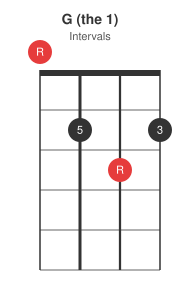
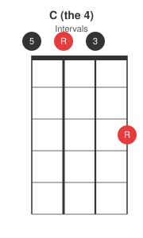
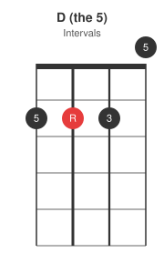
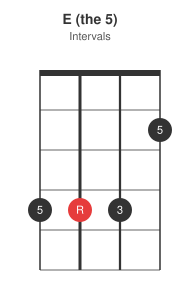
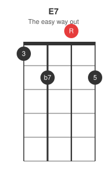
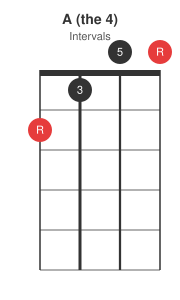
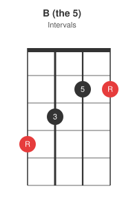
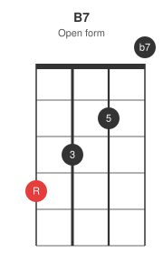
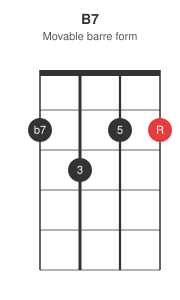

The 12-bar blues charts in this series (the form, guitar barre chords) are written in numbers, and numbers do not care what instrument you are holding. This post converts the same 1-4-5 chart to ukulele shapes in standard GCEA tuning, for the three keys a uke player is most likely to get called into: G, A, and E.
The form, unchanged
Twelve bars, three chords, turnaround in bar 12 -- exactly as on guitar:
1 1 1 1
4 4 1 1
5 4 1 1
All the variations from the first post (quick change, long 5, the shuffle feel) apply as written. Only the shapes below change.
Key of G
1-4-5 in G is G, C, D -- the friendliest blues key on a ukulele, all three chords in the first three frets:



Key of A
1-4-5 in A is A, D, E:

E major is famously the ukulele's least favourite chord. The 4442 voicing above is the most reliable of the standard options; if it fights you, use E7 instead -- easier, and the blues actively prefers the 7th sound anyway:

Key of E
1-4-5 in E is E, A, B. Guitarists love E blues for the open strings; on ukulele it is the workout key, with both the E and B shapes up the neck:


Here too the 7ths are the escape hatch: E7 (1202, above) for the 1 and B7 for the 5 turn the workout key into an easy one. B7 comes in two common voicings -- take your pick:


The open form is the easier grab -- fingers walk down 4-3-2 and the open A course rings as the b7. The barre form takes a moment more to set, but it damps cleanly for a choppy shuffle and it moves: slide it up a fret and it is C7, up three and it is D7. Let the hands decide.
Playing it
Strum with the same shuffle feel as on guitar -- the lopsided long-short eighths from the first post. The ukulele's short sustain suits a damped, percussive shuffle: a light palm or finger mute after each strum stands in for the guitar's palm muting. And since every shape above is fretted with a finger or two, swapping any chord for its dominant 7th costs nothing -- lean on them freely.